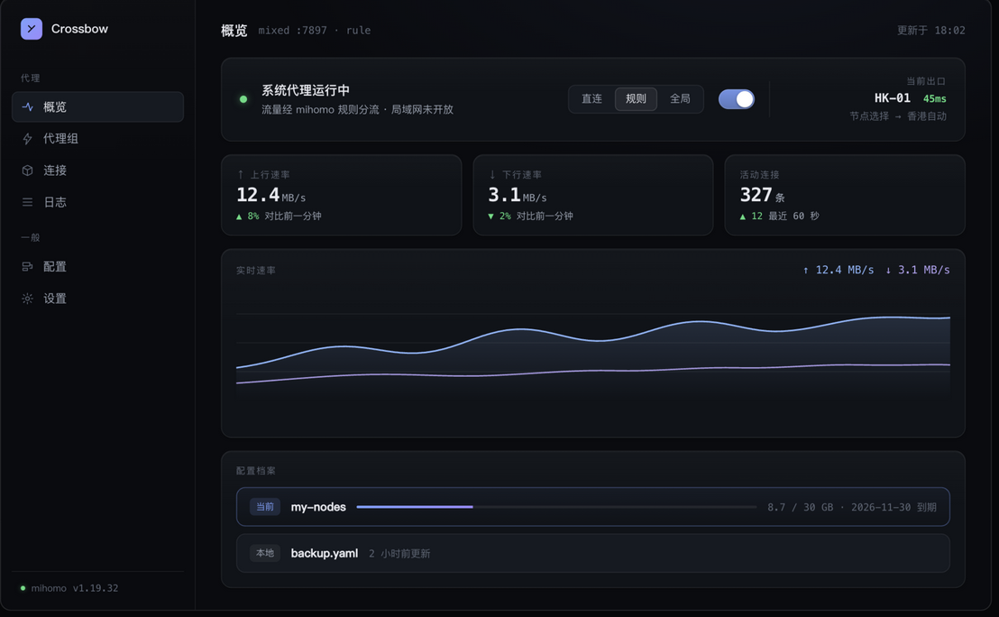

Crossbow 以 mihomo 为内核，为 macOS 而生： 订阅自动更新、网络诊断向导、JS 覆写、轻量模式—— 把「为什么上不了网」变成一键自检。

每个特性都来自真实的日常使用反馈
URL / 粘贴 / 文件 / 拖拽 / 深链接导入，流量与到期一目了然；自动更新失败保留旧配置并指数退避重试。
开启前快照原设置，退出/崩溃精确还原；内核异常自动降级恢复——告别「退出后断网」。
七项按依赖顺序自检：内核、控制器、配置、端口、系统代理指向、代理连通、DNS——失败项一键修复。
用 function main(config) 改造订阅：过滤节点、改写规则。保存即校验，错误当场归因；沙箱执行无副作用。
关闭窗口 = 内核与代理保留、界面内存归零。重新打开自动接管，状态无缝恢复；托盘一键切换。
速率曲线、按进程聚合的流量排行、单连接断开、分级日志——运行状态尽收眼底。
下载 dmg 拖入「应用程序」。首次打开右键 → 打开，或执行 xattr -dr com.apple.quarantine /Applications/Crossbow.app。
粘贴订阅链接回车，或直接把 .yaml 配置文件拖进窗口。设置自动更新间隔，流量与到期自动追踪。
首页点亮开关：内核自动拉起、系统代理即时生效。选个节点，或让诊断向导帮你确认链路。
应用内也可一键检查更新（minisign 签名校验）
xattr -dr com.apple.quarantine /Applications/Crossbow.app 后正常打开。~/Library/Application Support/com.crossbow.app/，每次保存前自动快照（保留 5 份），升级自动继承；坏覆写会触发安全模式兜底。